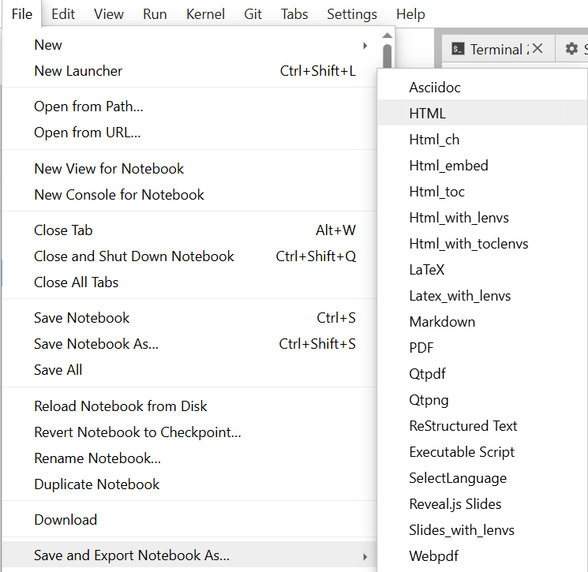
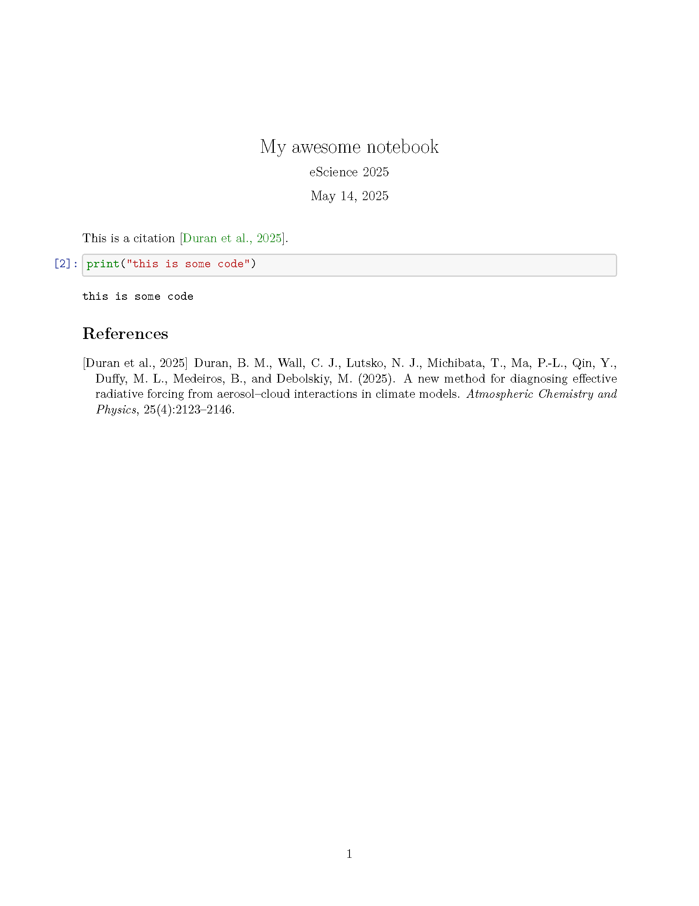

Exporting notebooks#
You can export your notebooks as an html file or as a pdf, processed through LaTeX.
You can do it through jupyterlab GUI, however, this method will only apply default rendering templates.
{kind=link}
A better way to export your notebook is to use CLI: .. code-block::bash
# convert to html: jupyter nbconvert notebook.ipynb –to html #convert to pdf through latex jupyter nbconvert notebook.ipynb –to pdf
When converting, you can specify a template for rendering with --template-file <file>.
You can look up other options with jupyter nbconvert --help
Citiations in notebooks#
For rendering your notebook in HTML:#
If you wish to do citations in your notebook, there are multiple ways to do it. If you don’t want to do a bibliography, you can just use markdown syntax to hyperlink to a valid URL.
[_(Duran et al., 2024)_](https://acp.copernicus.org/articles/25/2123/2025/)
Or instead, you can use <cite></cite> tag in html:
<cite><a href="https://acp.copernicus.org/articles/25/2123/2025/">(Duran et al., 2024)</a></cite>
Note, that the <a></a> html-tag is an anchor, it does not have to be hyperlinked to a url. It can be some id within the notebook.
For example, We have a markdown cell with bibliography:
#### Bibliography
<p id="duran24">
Duran, B. M., Wall, C. J., Lutsko, N. J., Michibata, T., Ma, P.-L., Qin, Y., Duffy, M. L., Medeiros, B., &38; Debolskiy, M. (2025).
A new method for diagnosing effective radiative forcing from aerosol–cloud interactions in climate models.
<i>Atmospheric Chemistry and Physics</i>, <i>25</i>(4), 2123–2146.
doi:<a href="https://doi.org/10.5194/acp-25-2123-2025">10.5194/acp-25-2123-2025</a>
</p>
In this cell we have <a href=...></> since href here is a https link, when the cell is rendered, if you click on the text within <a></a>, a new browser tab will open with that page.
Since <p></p> in the example above has attribute id=duran24, we can reference it in another notebook cell, like this:
... as was shown by <cite><a href="#duran24">Duran et al., 2024</a></cite> ...
Now, this Duran et al., 2024 will be highlited and if you click on it, it will move your view to the cell with bibliogrpahy at the paragraph with id=duran2024.
Another way to make citations and bibliography is to use jupyterlab-citation-manager, however, since it uses some outdated libraries, it is not installed by default. To enable it, go into extensions tab on the left, accept warning and type the name of the extension and click on install.
{kind=link}
Then, the lab will ask you to refresh the page. The extension then will request a personal token from zotero. Follow the instructions in readme.
Note
The extensions are uninstall every time you restart your server. So you need to re-install them again.
Citation in pdf through LaTeX:#
If you wish to convert your notebook to pdf, and manage your bibliography with bibtex, you will need to create a custom jinja template file adn a bibtex .bib` file.
For example, make a file my_template.tex.j2 with contents:
((*- extends 'style_jupyter.tex.j2' -*))
((* block author *))
\author{eScience 2025}
((* endblock author *))
((* block title *))
\title{My awesome notebook}
((* endblock title *))
((* block bibliography *))
\bibliographystyle{apalike}
\bibliography{biblio}
((* endblock bibliography *))
You can see, that \bibliography command is pointing to biblio.bib file, f.e.:
@article{duran24,
AUTHOR = {Duran, B. M. and Wall, C. J. and Lutsko, N. J. and Michibata, T. and Ma, P.-L. and Qin, Y. and Duffy, M. L. and Medeiros, B. and Debolskiy, M.},
TITLE = {A new method for diagnosing effective radiative forcing from aerosol--cloud interactions in climate models},
JOURNAL = {Atmospheric Chemistry and Physics},
VOLUME = {25},
YEAR = {2025},
NUMBER = {4},
PAGES = {2123--2146},
URL = {https://acp.copernicus.org/articles/25/2123/2025/},
DOI = {10.5194/acp-25-2123-2025}
}
To cite an entry from biblio.bib in your notebook use the following: <cite data-cite="duran24"></cite>. This will not render in your cell (since the body is empty), the citation will apear after rendering the notebook.
Assume notebook my-notebook.ipynb with just one markdown cell:
This is a citation <cite data-cite="duran24"></cite>.
And one code cell:
print("this is some code")
If you run nbconvert on it (given the template file above and .bib file above are in the same directory as your notebook):
jupyter nbconvert my-notebook.ipynb --to pdf --template-file template.tex.j2
The resulting pdf will look like this:
{kind=link}